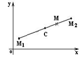

Деление отрезка в данном отношении

Точка  делит отрезок в отношении ,
если .
делит отрезок в отношении ,
если .
делит отрезок в отношении ,
если . Тогда а отсюда и координаты точки  находятся по формулам:
находятся по формулам:
находятся по формулам:.
Координаты середины отрезка  получаются
при , то есть :
получаются
при , то есть :
получаются
при , то есть :
Координаты
середины отрезка
Отметим, что число не
зависит от того, как выбрано положительное направление на отрезке , так как при изменении направления
на противоположное не меняется.